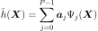
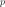
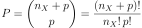
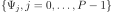

FixedStrategy¶
- class FixedStrategy(*args)¶
Fixed truncation strategy.
- Available constructors:
FixedStrategy(orthogonalBasis, dimension)
- Parameters
- orthogonalBasis
OrthogonalBasis An OrthogonalBasis.
- dimensionpositive int
Number of terms of the basis.
- orthogonalBasis
See also
Notes
The so-called fixed strategy simply consists in retaining the first
 elements of the PC basis, the latter being ordered according to a given
elements of the PC basis, the latter being ordered according to a given
EnumerateFunction(hyperbolic or not). The retained set is built in a single pass. The truncated PC expansion is given by:
In case of a
LinearEnumerateFunction, for a given natural integer , a usual choice is to set equals to:
This way the set of retained basis functions  gathers all the polynomials with total degree not greater than . The number of terms
grows polynomially both in  and
though, which may lead to difficulties in terms of computational efficiency and
memory requirements when dealing with high-dimensional problems.
and
though, which may lead to difficulties in terms of computational efficiency and
memory requirements when dealing with high-dimensional problems.Examples
>>> import openturns as ot >>> ot.RandomGenerator.SetSeed(0) >>> # Define the model >>> inputDim = 1 >>> model = ot.SymbolicFunction(['x'], ['x*sin(x)']) >>> # Create the input distribution >>> distribution = ot.ComposedDistribution([ot.Uniform()]*inputDim) >>> # Construction of the multivariate orthonormal basis >>> polyColl = [0.0]*inputDim >>> for i in range(distribution.getDimension()): ... polyColl[i] = ot.StandardDistributionPolynomialFactory(distribution.getMarginal(i)) >>> enumerateFunction = ot.LinearEnumerateFunction(inputDim) >>> productBasis = ot.OrthogonalProductPolynomialFactory(polyColl, enumerateFunction) >>> # Truncature strategy of the multivariate orthonormal basis >>> # We choose all the polynomials of degree <= 4 >>> degree = 4 >>> indexMax = enumerateFunction.getStrataCumulatedCardinal(degree) >>> print(indexMax) 5 >>> # We keep all the polynomials of degree <= 4 >>> # which corresponds to the 5 first ones >>> adaptiveStrategy = ot.FixedStrategy(productBasis, indexMax)
Methods
Compute initial basis for the approximation.
getBasis()Accessor to the underlying orthogonal basis.
Accessor to the object's name.
getId()Accessor to the object's id.
Accessor to the maximum dimension of the orthogonal basis.
getName()Accessor to the object's name.
getPsi()Accessor to the orthogonal polynomials of the basis.
Accessor to the object's shadowed id.
Accessor to the object's visibility state.
hasName()Test if the object is named.
Test if the object has a distinguishable name.
setMaximumDimension(maximumDimension)Accessor to the maximum dimension of the orthogonal basis.
setName(name)Accessor to the object's name.
setShadowedId(id)Accessor to the object's shadowed id.
setVisibility(visible)Accessor to the object's visibility state.
updateBasis(alpha_k, residual, relativeError)Update the basis for the next iteration of approximation.
- __init__(*args)¶
- getBasis()¶
Accessor to the underlying orthogonal basis.
- Returns
- basis
OrthogonalBasis Orthogonal basis of which the adaptive strategy is based.
- basis
- getClassName()¶
Accessor to the object’s name.
- Returns
- class_namestr
The object class name (object.__class__.__name__).
- getId()¶
Accessor to the object’s id.
- Returns
- idint
Internal unique identifier.
- getMaximumDimension()¶
Accessor to the maximum dimension of the orthogonal basis.
- Returns
- Pinteger
Maximum dimension of the truncated basis.
- getName()¶
Accessor to the object’s name.
- Returns
- namestr
The name of the object.
- getPsi()¶
Accessor to the orthogonal polynomials of the basis.
- Returns
- polynomialslist of polynomials
Sequence of
analytical polynomials.
Notes
The method
computeInitialBasis()must be applied first.Examples
>>> import openturns as ot >>> productBasis = ot.OrthogonalProductPolynomialFactory([ot.HermiteFactory()]) >>> adaptiveStrategy = ot.FixedStrategy(productBasis, 3) >>> adaptiveStrategy.computeInitialBasis() >>> print(adaptiveStrategy.getPsi()) [1,x0,-0.707107 + 0.707107 * x0^2]
- getShadowedId()¶
Accessor to the object’s shadowed id.
- Returns
- idint
Internal unique identifier.
- getVisibility()¶
Accessor to the object’s visibility state.
- Returns
- visiblebool
Visibility flag.
- hasName()¶
Test if the object is named.
- Returns
- hasNamebool
True if the name is not empty.
- hasVisibleName()¶
Test if the object has a distinguishable name.
- Returns
- hasVisibleNamebool
True if the name is not empty and not the default one.
- setMaximumDimension(maximumDimension)¶
Accessor to the maximum dimension of the orthogonal basis.
- Parameters
- Pinteger
Maximum dimension of the truncated basis.
- setName(name)¶
Accessor to the object’s name.
- Parameters
- namestr
The name of the object.
- setShadowedId(id)¶
Accessor to the object’s shadowed id.
- Parameters
- idint
Internal unique identifier.
- setVisibility(visible)¶
Accessor to the object’s visibility state.
- Parameters
- visiblebool
Visibility flag.
- updateBasis(alpha_k, residual, relativeError)¶
Update the basis for the next iteration of approximation.
Notes
No changes are made to the basis in the fixed strategy.